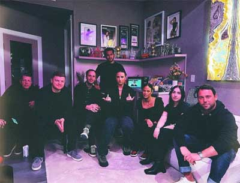
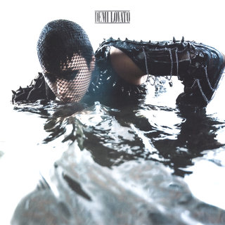
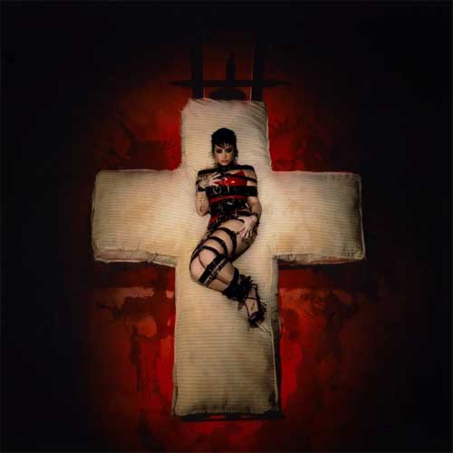
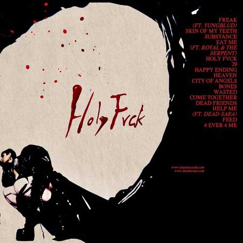
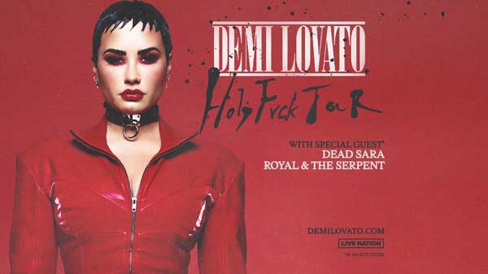

HOLY FVCK é o oitavo álbum de estúdio da musicista estadunidense Demetria Devonne Lovato, ou, como popularmente é conhecida, Demi Lovato.
O álbum, lançado no dia 19 de agosto de 2022 é o sucessor do seu álbum de retorno à música Dancing With the Devil... The Art of Starting Over, lançado em abril de 2021.
Com HOLY FVCK, Lovato revisita o início da sua jornada musical, trazendo de volta um som mais rock e pop/rock, muito pedido e adorado pelos fãs ao longo de toda a sua carreira.
A jornada dessa nova fase de sua carreira se iniciou em janeiro de 2022, quando em uma postagem na rede sociaal Instagram, Demi Lovato anunciou o "funeral da sua música pop"
Poucos meses depois, houve o tão aguardado anuncio do lead single que (re)abriria a porta de Lovato a sua jornada com o rock. A música escolhida como carro-chefe do álbum foi SKIN OF MY TEETH, lançada em 10 de junho de 2022. Pouco tempo depois, Lovato lançou o segundo single do álbum, intitulado de SUBSTANCE.
A capa do álbum e a tracklist oficial podem ser conferidas abaixo
 O álbum trouxe consigo a primeira turnê de Lovato desde seu retorno à música. A turnê contou com um total de 36 shows, divididos entre seus shows solo e alguns festivais, como o Rock In Rio. Como ato de abertura, Lovato contou com Dead Sara e Royal & the Serpent na leg norte-Americana da turnê, e com artistas como Tuyo, Jennifer Souza, Dani Ride, Pavlo e Odd Mami nas diferentes datas que apresentou na América do Sul.
A setlist da mais recente turnê da estrela contou com a presença de diversas das músicas novas, incluindo algumas presente no 7° álbum de estúdio de Lovato, que não contou com nenhuma turnê de apoio. Além disso, vários de seus hits e classícos antigos foram apresentados, muitos com um novo instrumental voltado para o rock.
Durante suas apresentações, Lovato realizou o cover da canção La La de Ashlee Simpson, e de Iris, classíco da banda Goo Goo Dolls. Em alguns shows, os artistas foram convidados e cantaram suas respectivas músicas juntos de Lovato. Royal & the Serpent e Dead Sara também foram convidadas para cantar com Lovato em datas especificas em que também serviram como ato de abertura dos shows.
A turnê se iniciou em 13 de agosto de 2022 em Springfiel, Estados Unidos da America, e teve o sua última apresentação no dia 10 de novembro de 2022 em Rosemont, Estados Unidos da America.
Até o momento, Demi Lovato não anunciou a presença de novas datas, causando expeculações de que a "era" HOLY FVCK já chegou ao seu fim. Além disso, Lovato confirmou estar trabalhando em novas músicas em recente publicação nas redes sociais.